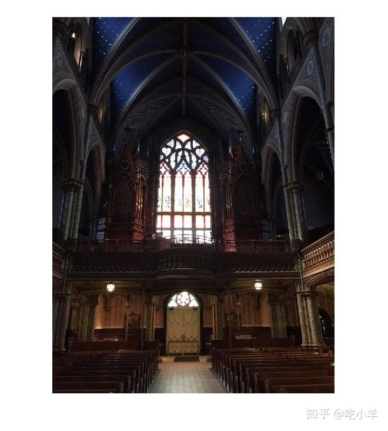
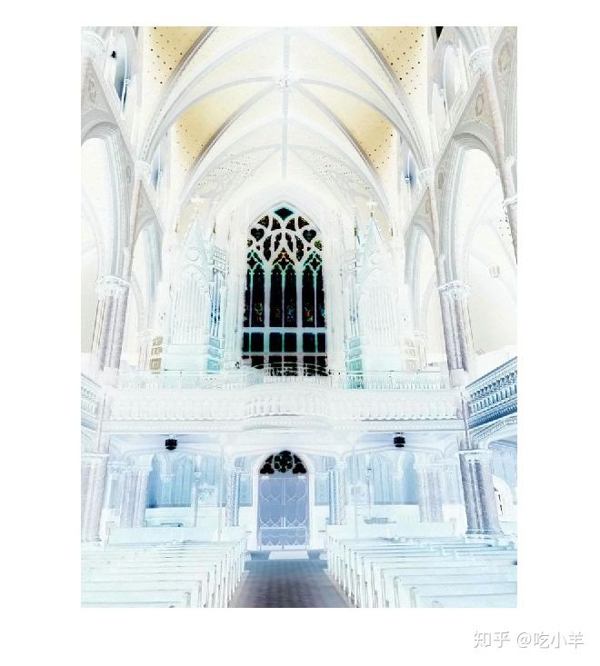
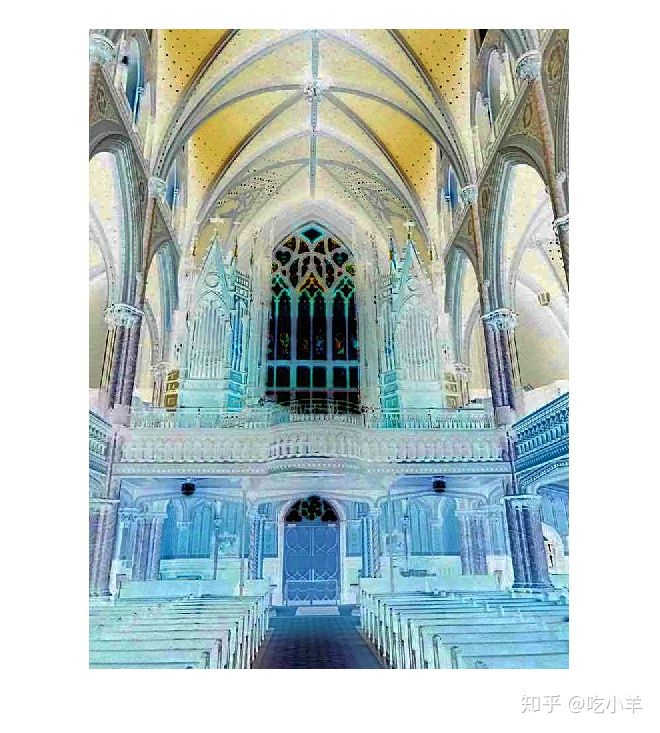
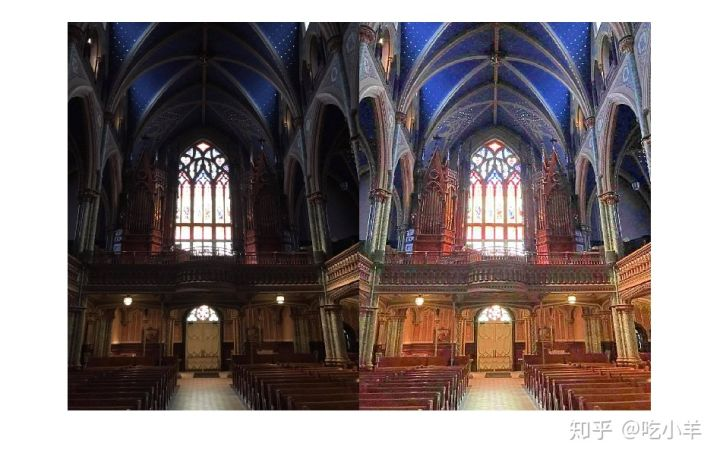
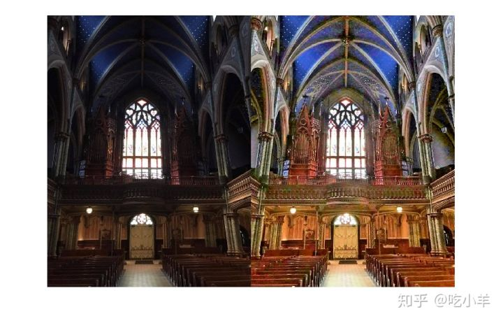
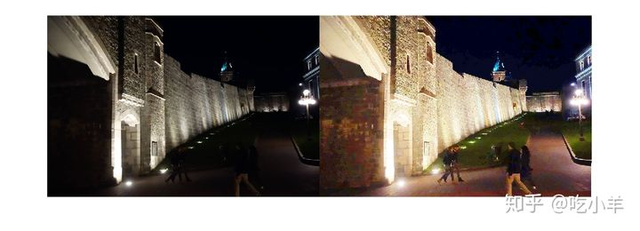
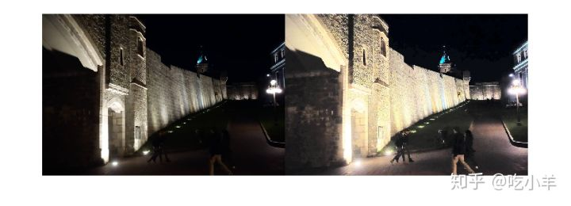
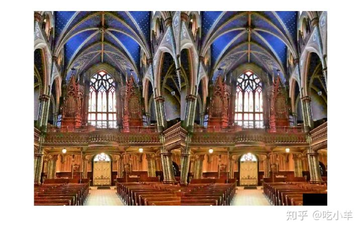
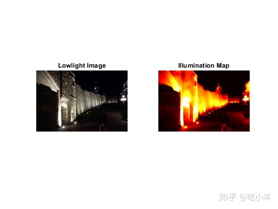

Home
由于光线不足，在户外场景中拍摄的图像可能会严重退化。这些图像可能具有较低的动态范围和较高的噪声水平，从而影响了计算机视觉算法的整体性能。要使计算机视觉算法在弱光条件下更强大，需要使用弱光图像增强功能来改善图像的可见性。弱光图像或HDR图像的像素级反转直方图与朦胧图像的直方图非常相似。因此，您可以使用除雾技术来增强低光图像。
使用除雾技术来增强低光图像包括三个步骤：
步骤1：将弱光图像反转。
第2步：将雾度消除算法应用于倒置的弱光图像。
步骤3：反转增强型图片。
使用除雾算法增强弱光图像
导入在弱光下捕获的RGB图像。
A = imread('lowlight_11.jpg');
figure, imshow(A);

反转图像并注意原始图像中的弱光区域显得模糊。
AInv = imcomplement(A); figure, imshow(AInv);

使用imreducehaze函数减少雾度。
BInv = imreducehaze(AInv); figure, imshow(BInv);

反转结果以获得增强的图像。
B = imcomplement(BInv);
并排显示原始图像和增强图像。
figure, montage({A, B});

使用imreducehaze可选参数进一步改善结果
为了获得更好的结果，再次调用imreducehaze处理反转的图像，这次指定一些可选参数。
BInv = imreducehaze(AInv, 'Method','approx','ContrastEnhancement','boost');
BImp = imcomplement(BInv);
figure, montage({A, BImp});

改善低光照图像的另一个例子
导入在弱光下捕获的RGB图像。
A = imread('lowlight_21.jpg');
反转图像。
AInv = imcomplement(A);
应用除雾算法。
BInv = imreducehaze(AInv, 'ContrastEnhancement', 'none');
反转结果。
B = imcomplement(BInv);
并排显示原始图像和增强图像
figure, montage({A, B});

通过使用不同的色彩空间减少色彩失真
将输入图像从RGB颜色空间转换为L * a * b *颜色空间。
Lab = rgb2lab(A);
反转L * a * b *图像。
LInv = imcomplement(Lab(:,:,1) ./ 100);
使用imreducehaze函数对倒置的图像进行除雾。
LEnh = imcomplement(imreducehaze(LInv,'ContrastEnhancement','none'));
增加饱和度。
LabEnh(:,:,1) = LEnh .* 100; LabEnh(:,:,2:3) = Lab(:,:,2:3) * 2; % Increase saturation
将图像转换回RGB图像，并排显示原始图像和增强图像。
AEnh = lab2rgb(LabEnh);
figure, montage({A, AEnh});

使用降噪改善结果
弱光图像可能会具有较高的噪点级别。增强弱光图像可能会增加此噪声级别。去噪可能是有用的后处理步骤。
使用imguidedfilter函数消除增强图像中的噪点。
B = imguidedfilter(BImp);
figure, montage({BImp, B});

估算照明图
导入在弱光下捕获的RGB图像。
A = imread('lowlight_21.jpg');
反转图像。
AInv = imcomplement(A);
将除雾算法应用于图像。
[BInv, TInv] = imreducehaze(AInv, 'Method', 'approxdcp', 'ContrastEnhancement', 'none');
反转增强的图像。
T = imcomplement(TInv);
对照显示伪彩色照明图和原始图像。
figure,
subplot(1,2,1);
imshow(A), title('Lowlight Image');
subplot(1,2,2);
imshow(T), title('Illumination Map');
colormap(gca, hot(256));

局限性
由于暗通道在弱光条件下的适应性较差，因此该方法可能会丢失一些细节或变得过分增强。
参考文献
Dong, Xuan, et al. "Fast efficient algorithm for enhancement of low lighting video." Multimedia and Expo (ICME), 2011 IEEE International Conference on. IEEE, 2011.
[1] Dong, X., G. Wang, Y. Pang, W. Li, J. Wen, W. Meng, and Y. Lu. "Fast efficient algorithm for enhancement of low lighting video." Proceedings of IEEE® International Conference on Multimedia and Expo (ICME). 2011, pp. 1–6.
======================================================================
我的测试结果及程序
下面是我测试的代码：

注：本文根据MATLAB官网内容修改而成。